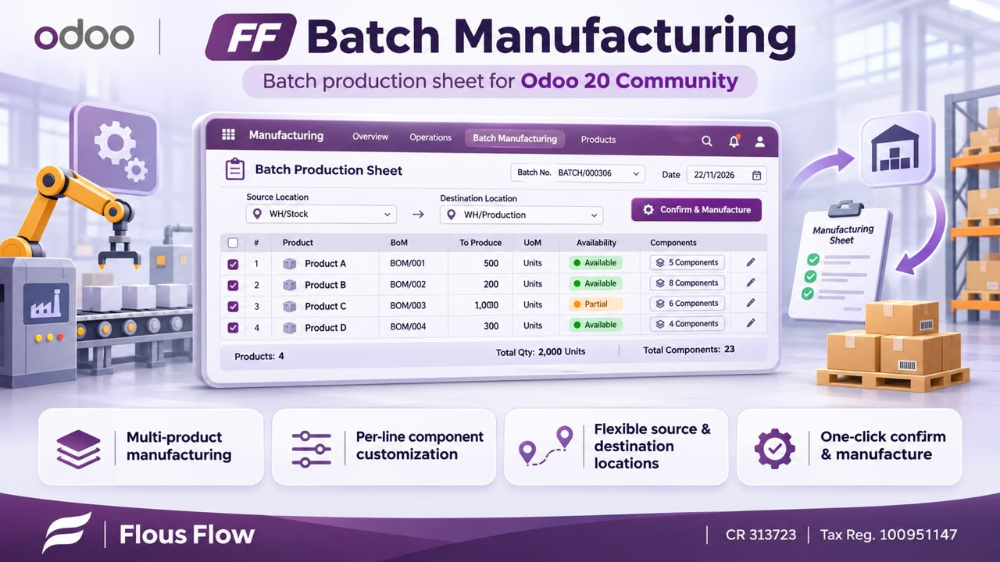

Batch Manufacturing
Flous Flow Batch Manufacturing creates one controlled batch sheet for
multiple products while keeping one independent native Odoo Manufacturing
Order per line.
Use it when a production team needs to prepare several finished products
together, review each component list independently, and complete eligible
one-step manufacturing orders from one screen.
Features
- Independent native Manufacturing Order for every saved line.
- Review and customize a line's components without changing the master BoM.
- Edited component quantities are consumed for that Manufacturing Order only.
- Scale the current component moves when a draft quantity changes.
- Header source and destination locations populate every line automatically.
- Native Odoo quantity-at-date availability indicator.
- Manager-only reset to Draft without creating Unbuild orders.
Workflow
- Create a batch from Manufacturing > Operations > Batch Manufacturing.
- Add products with standard manufacturing BoMs and save the lines.
- Review components, then use Confirm & Manufacture for eligible simple orders.
Configuration and permissions
- Requires Odoo 20 Community and the Manufacturing application.
- Products must have an active normal Manufacturing BoM.
- Manufacturing users can create and execute batches according to their standard Odoo permissions.
- Only Manufacturing Managers can reset a completed batch to Draft.
Important limits
One-click completion is intended for simple one-step Manufacturing Orders.
Work Orders, serial or lot dialogs, multi-step pickings, backorders, and other
native Odoo wizards remain in the standard Odoo screens. Resetting to Draft is
a workflow reset and does not reverse posted stock valuation.
Odoo 20 Community | Dependency: Manufacturing (MRP)